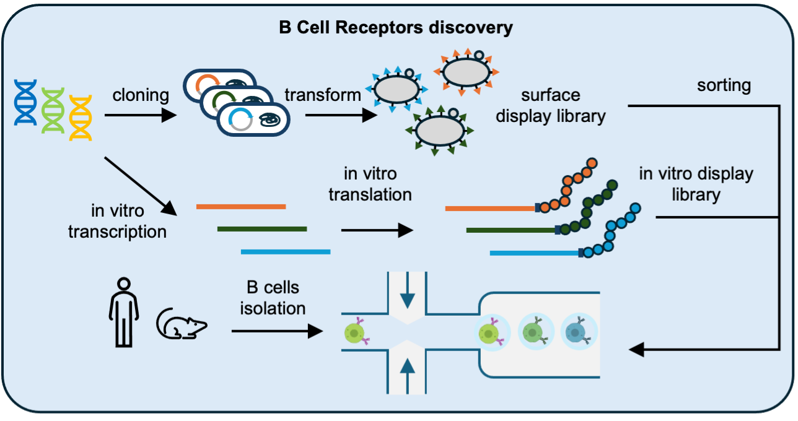

Revolutionizing Experimental Biology
Overview of High-Throughput Methods

Core Technologies
-
Yeast Display Systems: Eukaryotic display platform for screening protein-protein interactions and antibody-antigen binding with high throughput.
-
mRNA Display Technology: In vitro display system that links genotype to phenotype, enabling rapid screening of protein libraries with millions of variants.
-
Deep Mutational Scanning (DMS): Comprehensive analysis of protein function by systematically testing thousands of mutations in parallel.
-
Automated Laboratory Workflows: Robotic systems that handle sample preparation, screening, and data collection with minimal human intervention.
Applications in Virus and Antibody Research
These high-throughput methods are powerful for studying virus-immune
system interactions. We can screen thousands of antibody variants against viral
targets, identify escape mutations, and characterize the functional effects of
mutations across entire viral proteins.